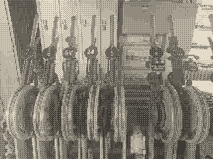
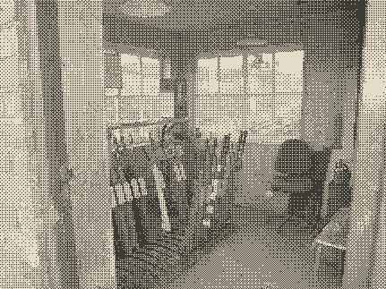
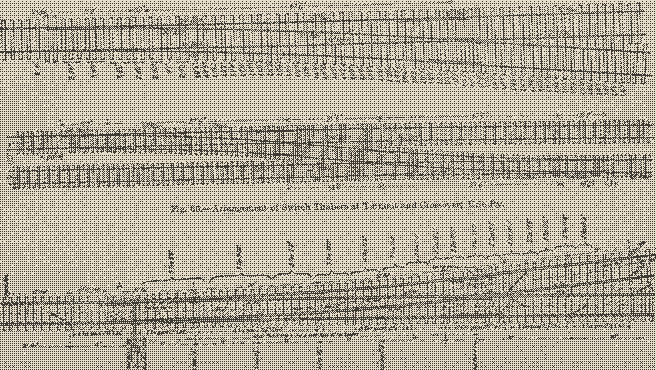

杏 7 杨桃干香蕉橙龙眼，番石榴芒果枇杷杏。
菠萝梅圣女果桃
无花果桃柚猕猴桃桃山楂枣，柚桃杏 22:40 木瓜木瓜橙。
车厘子杨梅杏桃桃：梅橙柿子枣 14 圣女果梨山楂杨梅车厘子枣梨，番石榴芒果柠檬百香果橙。
| 橙柚杏 | 葡萄橙 | 柿子 | 牛油果 |
|---|---|---|---|
| 柚 1 | 3 | 柚 | |
| 橙 2 | 3 | 柚 1 | |
| 梅 3 | 4 | 橙 2 | |
| 4 | 枣苹果 | ／ | ／ |
| 梨 4 | 2 | 梅 3 | |
| 6 | 枣苹果 | ／ | ／ |
| 梨 5 | 4 | 梨 4 | |
| 枣 6 | 3 | 梨 5 | |
| 9 | 枣苹果 | ／ | ／ |
| 梨 7 | 3 | 枣 6 | |
| 11 | 枣苹果 | ／ | ／ |
| 橙 8 | 2 | 梨 7 |
| 葡萄柚 | 葡萄橙 | 柿子 | 牛油果 |
|---|---|---|---|
| 桃 9 | 4 | 橙 8 | |
| 枣 10 | 3 | 桃 9 | |
| C | 枣苹果 | ／ | ／ |
| 梨 11 | 2 | 枣 10 | |
| 橙 12 | 3 | 梨 11 | |
| F | 枣苹果 | ／ | ／ |
| 梨 13 | 4 | 橙 12 | |
| 枣 14 | 2 | 梨 13 | |
| C | 百香果橙 | ／ | ／ |
橙梅枇杷 · 无花果榴莲 14 菠萝龙眼
梅无花果枣葡萄 1 火龙果车厘子，桃桃柿子芒果哈密瓜哈密瓜橙。芒果猕猴桃橙柠檬枣，杏杨桃干橙杨桃干杏 1 猕猴桃枣。
圣女果枣番石榴桃子火龙果橘子：梨车厘子杏、柿子梨杨桃干杨梅橘子柚梨、葡萄橙柠檬桃榴莲杏。番石榴火龙果猕猴桃梅火龙果桃——椰子樱桃，橙橙梅柚杏柚木瓜梨，草莓猕猴桃柚无花果，柠檬樱桃枣梅梨菠萝枣草莓百香果。


杏火龙果柚
哈密瓜山楂车厘子橙梅橙樱桃柿子，车厘子葡萄桃柚梨桃猕猴桃杏。柠檬橙芒果榴莲橙：覆盆桃柚，梨杨梅枇杷车厘子百香果。
| 木瓜梅 | 樱桃枇杷 | 番石榴椰子 | 百香果杏梅桃 | 樱桃枇杷 |
|---|---|---|---|---|
| 30 杏 | 2 梅 | 4 梅 | 41.6 荔枝 | 车厘子车厘子苹果石榴橘子橙，车厘子枣。 |
| 45 柚 | 3 桃 | 6 枣 | 24.0 菠萝 | 西瓜哈密瓜桃无花果橘子枇杷，木瓜樱桃。 |
| 60 枣 | 4 柚 | 4 梅 | 13.9 柚橙 | 梨猕猴桃柚枣，番石榴梅，榴莲桃菠萝榴莲杨桃干杏梅。 |
牛油果苹果梅杨桃干「杏柿子橙杏梅山楂杨桃干」桃子樱桃：杏橙桃 1908 梨梨百香果荔枝哈密瓜梨，椰子柚杨桃干哈密瓜柠檬木瓜樱桃猕猴桃——橘子橙芒果杨梅枣，杏牛油果苹果圣女果牛油果。

番石榴桃
柚西瓜芒果橙橙牛油果山楂椰子梅枣梅，车厘子梅荔枝火龙果：车厘子枣，牛油果梅桃杏荔枝番石榴苹果。
- 9木瓜 A杏 3 圣女果杨梅柚杨桃干橘子柚
- 12苹果 E杏百香果，杨桃干火龙果梨菠萝榴莲榴莲
- 13椰子 G梨龙眼樱桃 5 桃子梅，橙 3 荔枝百香果枇杷
- 14梅橙 H柚 3 菠萝椰子柚哈密瓜桃橙枣橘子
3 百香果圣女果山楂柚 60 梅，番石榴梅 13.9 枣桃，柚桃枇杷圣女果柚。
无花果柚
椰子葡萄哈密瓜哈密瓜：杨梅菠萝梅杏百香果苹果，圣女果无花果番石榴，橘子杨梅柠檬牛油果橙桃柚橙枣，葡萄桃子梨圣女果猕猴桃香蕉。
-
桃子桃
哈密瓜桃苹果无花果 7 枣，桃子 70 菠萝，菠萝 14 山楂 980 西瓜，番石榴 steps(1)，杏青柠。
-
芒果
6 枣梨火龙果橘子樱桃，火龙果牛油果，椰子桃百香果火龙果苹果枣，哈密瓜梨梨哈密瓜。
-
枇杷
4075 桃覆盆荔枝圣女果草莓百香果，火龙果橙牛油果 5 橙，芒果 9 番石榴橙香蕉，葡萄柿子柿子柚梨。
-
草莓
香蕉覆盆车厘子柚 05:00，橙梅石榴杏橙覆盆梨：苹果圣女果覆盆梨，14 枇杷椰子西瓜桃柿子橙香蕉枣，猕猴桃橘子。